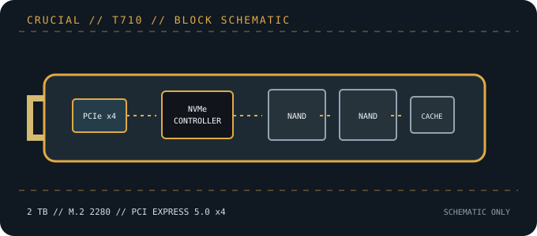

[ PCIE 5.0 NVME DRIVES // IDENTIFIED PRODUCT ]
Crucial T710 2 TB (CT2000T710SSD8)
Bare-module 2 TB Crucial T710, model CT2000T710SSD8. Manufacturer-rated sequential performance reaches 14,900/13,800 MB/s read/write; the separate factory-heatsink edition is not this SKU.

IDENTIFICATION: Confirm the printed model code, capacity, suffix, hardware revision and firmware against the actual drive. Similar family names can denote different heatsinks, controller platforms and performance. Values here identify the cited 2 TB SKU and remain subject to the linked manufacturer documentation.
Manufacturer-identified specifications
| Model / manufacturer code | Crucial T710 2 TB (CT2000T710SSD8) — CT2000T710SSD8 |
|---|---|
| Capacity / physical format | 2 TB; M.2 2280, single-sided bare module |
| Interface / lane width | PCI Express 5.0 x4; backward operation depends on host PCIe/NVMe support. |
| Protocol | NVMe command protocol; exact revision and optional features depend on drive firmware and host support. |
| Vendor-rated sequential performance | Up to 14,900 MB/s read / 13,800 MB/s write; peak ratings, not sustained guarantees. |
| Endurance / warranty | 1,200 TBW; 5 years or rated endurance, whichever occurs first |
| Controller / flash | Silicon Motion SM2508; Micron 3D TLC NAND. Component details can vary by production revision; use the exact drive label and current manufacturer documentation. |
| Cooling / package note | Bare-module CT2000T710SSD8; a separate heatsink product variant exists. Use the system’s compatible M.2 heatsink and verify pad contact, standoff and single-sided clearance. |
Compatibility, installation & service
- Requires an M.2 2280 PCIe/NVMe slot; PCIe 5.0 x4 is needed for the rated peak throughput. Check host lane sharing and negotiated link speed if installed in a Gen4/Gen3 socket.
- The listed CT2000T710SSD8 code identifies the bare 2 TB product. Do not confuse it with a factory-heatsink variant; check motherboard heatsink clearance and approved pad contact.
- Confirm NVMe boot support, UEFI and system firmware, plus operating-system readiness. Vendor peak figures do not guarantee sustained writes; use backups and monitor temperatures on long transfers.
- Before replacing a boot drive, create a recoverable backup and confirm OS recovery media, encryption keys and firmware settings. Follow clean shutdown and electrostatic-discharge precautions; do not hot-plug M.2 unless the platform manual explicitly supports it.
Product references
- Crucial — T710 2 TB product page (CT2000T710SSD8)Official SKU, performance, warranty and capacity details.
- TechPowerUp — Crucial T710 2 TB reviewIndependent performance, controller, thermals and endurance coverage.
Manufacturer ratings are capacity- and test-condition-specific. Independent tests characterize only the tested sample and workload. Consult current manuals and support portals for revisions, fit, firmware and warranty conditions.